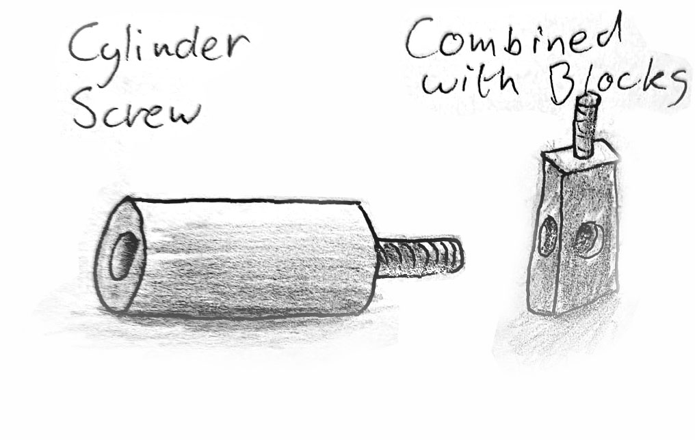
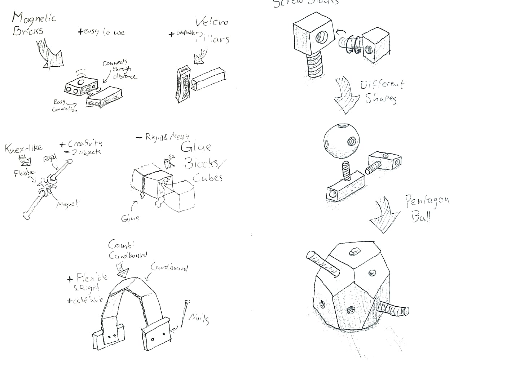
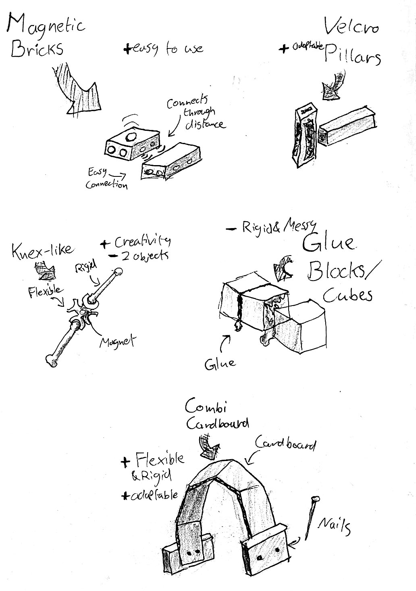
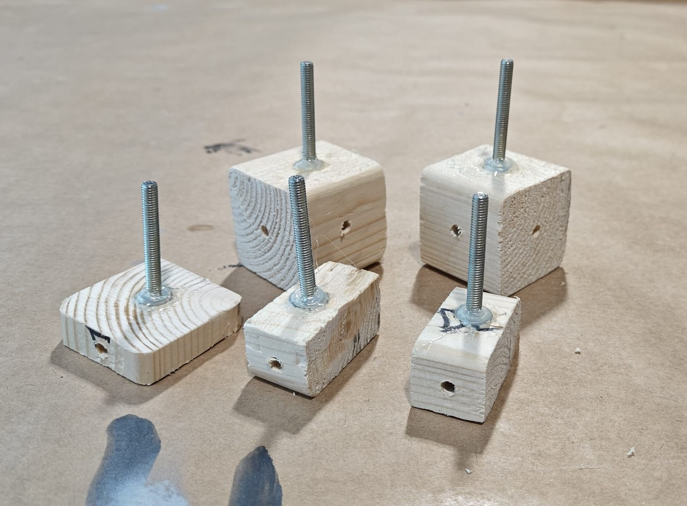
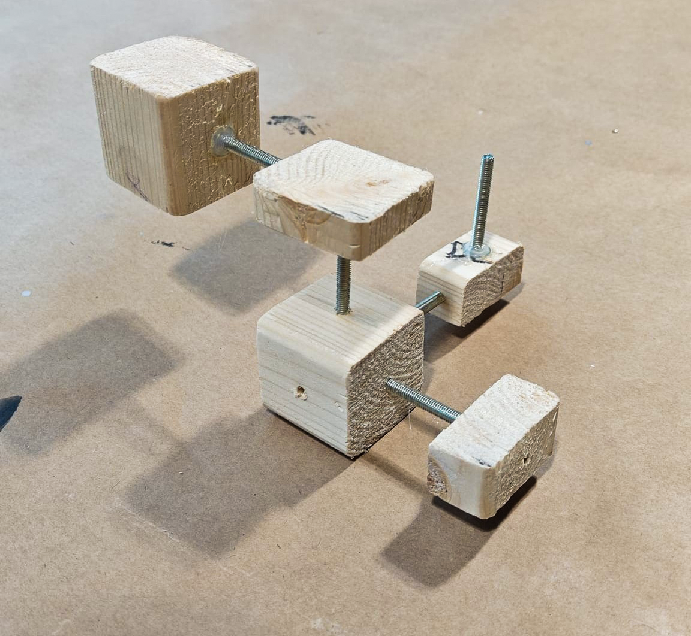
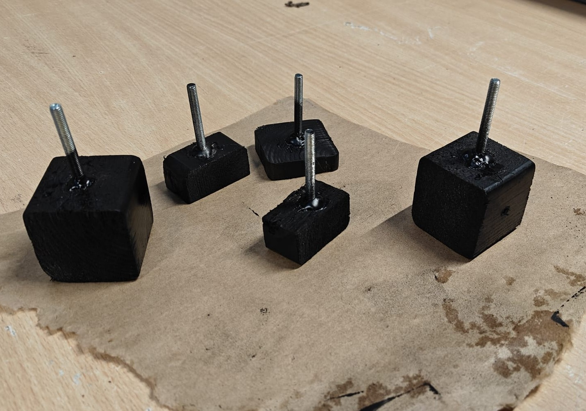

The goal was to set up a simple and practical online portfolio for the course. I decided to use this assignment as an opportunity to build my whole professional portfolio rather than just a course page. I used HTML5 and GitHub Pages to create this entire website, so everything you see here beyond this specific course represents work that came out of this portfolio project. It let me showcase my web development skills while having a proper home for all my creative work.
Assignment 1.1Completed
Tinkering Spaces (Photo Safari)
For this assignment I thought back to places where I used to tinker and that were meaningful to me. I was thinking less about physical tinkering and more about the spaces where I tinker mentally with ideas and problems. Each space represents a different mode of thinking and making, all of which have influenced how I approach design.
The Desk
This is where I can try whatever I like. It is the dedicated space for tinkering with whatever new technical obsession has captured my interest that week.
The Piano
The place where I feel most at ease. It allows me to relax and tinker purely with music, rhythm, and flow.
The Classroom
A space for talking and socializing. This is where I go to learn from other people's insights and bounce my own ideas off a group.
Assignment 2.1Completed
Design a Building Block: Screw Shapes
Challenge: Design a block that can be used for tinkering and quick prototyping.
I went through around ten different design concepts, trying out various ways to connect pieces. I experimented with flexible connections, rigid ones, permanent attachments, and temporary ones. I ended up combining ideas from my 9th and 10th sketches, and settled on a screw based design. I chose screws because they're really good for quick iteration. You can swap different shapes and sizes in and out really fast, but they're still strong enough to hold things together properly. Unlike permanent connections, you can quickly take them apart and rebuild, which is what makes them good for tinkering. I also used AI to generate some 3D renderings to visualize how the design would actually look and work.

Final Design: The screw shapes help iterate quickly.

Process: Exploring different shapes and connection types.

More Ideas: Brainstorming alternative attachments like magnets, velcro, and cardboard.
AI Rendering: Using AI to visualize material textures.
Assignment 2.2Completed
Design a building block - fabricate
To bring my "screw shapes" concept into the physical world, I created a lo-fi prototype. I started by cutting basic shapes (cubes and blocks) out of wood. I then drilled holes into specific faces and attached standard screws using a glue gun.
The Tinkering Process: During assembly, I quickly realized that the spacing and depth of the screws were crucial for stability. I spent a good amount of time just playing around with different hole placements, testing how the pieces slotted together before committing to the final glue-up. This messy, hands-on iteration helped me discover the physical constraints of the material, something that looked perfect in my digital sketches didn't always friction-fit well in reality.
Finally, to add an extra layer of "tinkerability," I finished the blocks with a coat of black chalk paint. This allows the user to draw, write, or erase labels on the blocks themselves, rapidly changing their meaning or function on the fly during a brainstorming session.

1. Raw Assembly
Wood blocks with screws attached via hot glue.

2. Testing the Fit
Playing around with the locking mechanism to test structural stability.

3. Chalk Paint Finish
Coated in chalk paint so the faces can be drawn on and customized.
Final Result
Complete Project
The finished building blocks with chalk paint coating, ready for rapid prototyping and ideation sessions.
Assignment 3.1Completed
Properties of Tinkering Materials
Based on our discussions during the course, we evaluated several existing tinkering sets to identify which material properties score highest and lowest across different affordances.
Material
Self-guiding
Preciousness
Skills-needed
Interoperable
Novelty
Threshold / Ceiling
Totem Maker Kit
Pretty self-explanatory, but some mistakes were easily made.
Made of metal, feeling precious/expensive. Not cheap, but offers abundant parts.
Barely any; just requires understanding how to connect stuff. (++)
Its strongest suit. It allows you to connect easily with other tinkering tools.
Not highly novel (mostly connector pieces), but the included saw is a nice touch.
Low threshold to step in, but the ceiling isn't very advanced. Got boring quickly.
Minecraft Maker Kit
Confusing. Felt like it was missing parts; could not do much with it.
Materials felt expensive and fragile—not made to be messed around with heavily.
Required prior understanding of coding and technology to use effectively.
Could be linked to a Raspberry Pi, which is nice, but very limited beyond that.
A bit outdated, though the core idea of adapting Minecraft for learning is novel.
The worst part of the kit. Decently high threshold, and you feel played out after a day.
LittleBits
Excellent self-guiding. Just playing around with it made us figure it out instantly.
Materials are expensive and not easily swappable. Low score in this regard.
Helps if you understand music, but you can successfully use it without prior skills.
Potentially USB compatible, but unclear. Quite limited interoperability overall.
Using sound as a primary tinkering medium is highly novel.
Low threshold. We played outside the box, and the ceiling for sound production is quite high.
What struck me most was that LittleBits was the best one for actually tinkering around with, especially if you don't have any prior knowledge or expertise. It just made you curious and want to figure out what was possible. The Minecraft kit, on the other hand, felt more like a marketing product than something designed for real hands-on exploration.
For more context, hands-on photos, and details of our experiments with these specific kits, please see my Lecture 2 Log.
Assignment 2.3Coming Up
Design a building block - make it interoperable
Assignment 3.2Coming Up
Properties of Tinkering Materials - extension
Assignment 4.0Coming Up
Scaffolding material: programming metaphor
Assignment 2.4Coming Up
Design your building block - evaluate
Assignment 3.3Coming Up
Properties of Tinkering Materials - wide walls
Assignment 5.1Coming Up
Group Assignment: concept design
Assignment 1.2Coming Up
Tinkering Spaces - reflect back
Assignment 4.1Coming Up
Overview on Design Methods
Assignment 5.2Coming Up
Group Assignment: physical MVP, first iteration
Assignment 4.2Coming Up
Tinkering as Design Method in your Field
Assignment 5.3Coming Up
Group Assignment - complete design, digital poster
Assignment 5.4Coming Up
Group Project - evaluation
Assignment 0.2Coming Up
Portfolio - submission
/// TERMINAL_01 ONLINE
Initialize Protocol
I am currently open to roles in Creative Technology and Interaction Design.